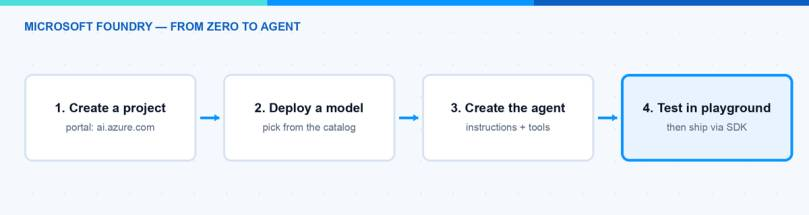
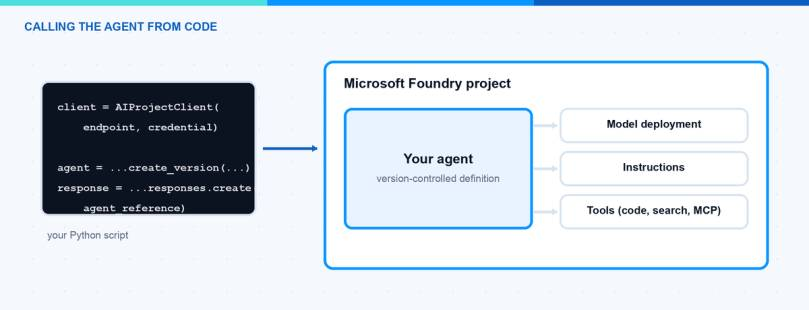

AI agents are everywhere right now, and many IT pros ask me where they should start. In this blog post I show you how to build your first Microsoft Foundry agent. We go step by step: create a project in the portal, deploy a model, create the agent with instructions and tools, test it in the playground, and finally call it from Python code. You do not need to be a developer to follow along. At the end you have a working Microsoft Foundry agent that you can extend for your own use cases.
What Is Microsoft Foundry?
Microsoft Foundry is Microsoft’s platform for building AI applications and agents. You might know it under the old name Azure AI Foundry — Microsoft renamed it, and the portal and the documentation now say Microsoft Foundry. The platform gives you three main things:
- A model catalog with models from OpenAI, Microsoft, and other providers that you can deploy with a few clicks.
- The Foundry Agent Service, which hosts your agents. An agent is a model plus instructions plus tools. You define it once and the service keeps it consistent for every user interaction.
- SDKs and APIs so you can call your models and agents from your own code and automation.
The agent part is the interesting one for us. Instead of sending a system prompt with every request, you create a Microsoft Foundry agent one time with a name, instructions, and optional tools like code interpreter or file search. Then every app or script just references the agent by name. If you want the bigger picture of where Microsoft is going with agents, have a look at my post about the agentic stack from Microsoft Build 2026.
What Do I Need Before I Start?
To build a Microsoft Foundry agent you need surprisingly little:
- An Azure subscription. A free account is enough for testing.
- The right permissions. To create the Foundry resource and project you need the Foundry Account Owner role (or Contributor/Owner) on the subscription or resource group. To work inside the project you need the Foundry User role. These roles were recently renamed from “Azure AI User” and so on, so do not be confused if you still see the old names.
- For the code part: Python and the Azure CLI installed on your machine.
Note: You pay for the model usage per token, not for the agent itself. Also, not every model is available in every region, so check the region support and pricing pages before you pick a location for your project.
How Do I Create a Project?
A Microsoft Foundry agent always lives inside a project. Here is the click path:
- Go to the Microsoft Foundry portal and sign in with your Azure account. Make sure the New Foundry toggle at the top is on.
- If this is your first visit, the portal asks you to create a project. Select Create a new project. Otherwise, click the project name in the upper-left corner and select Create new project.
- Enter a name, for example
my-first-agent-project. - Open Advanced options if you want to choose the resource group and the region yourself. I recommend a region close to you.
- Click Create project and wait a moment until the project overview page appears.
Next we need a model deployment. The agent needs a brain:
- Select Discover in the upper-right navigation, then Models in the left pane.
- Search for a model, for example gpt-5.1-mini. It is cheap and good enough for a first test.
- Click Deploy → Default settings to add it to your project.
- Note the deployment name. You need it later in the code.

Hint: If you create your project in the West US 3 region, you can try the new instant models (preview) and skip the deployment step completely. Nice for a quick demo.
How Do I Create the Microsoft Foundry Agent?
Now the fun part. We create the Microsoft Foundry agent in the portal:
- Select Build in the upper-right navigation, then Agents in the left pane.
- Click Create agent and give it a name, for example
MyAgent. - Add instructions. This is the personality and the job description of your agent. For example: “You are a helpful assistant for IT admins. Answer questions about device management short and precise.”
- Select your model deployment from the dropdown.
- Optionally, add tools. Two useful ones for the start: file search lets the agent answer questions from documents you upload, and code interpreter lets the agent write and run Python code, for example to create a chart from numbers.
That is already it. The agent is saved in your project and every colleague with the Foundry User role can use it.
How Do I Test the Agent in the Playground?
You do not need any code to test your Microsoft Foundry agent. The playground opens right next to the agent settings:
- Type a question in the chat box, for example “Write me a short checklist for onboarding a new Windows device.”
- Check if the answer matches your instructions. If not, adjust the instructions and try again.
- Ask a follow-up question. The agent keeps the conversation history, so it should understand the context.
This loop — change instructions, test, change again — is where you spend most of your time. Do it in the playground before you touch any code.
How Do I Call the Agent From Code?
For automation you want to call the Microsoft Foundry agent from a script. Install the packages azure-ai-projects (version 2.0.0 or higher) and azure-identity with pip, run az login, and copy your project endpoint from the welcome screen of your project. Then a minimal example looks like this:
# pip install "azure-ai-projects>=2.0.0" azure-identity
from azure.identity import DefaultAzureCredential
from azure.ai.projects import AIProjectClient
from azure.ai.projects.models import PromptAgentDefinition
project = AIProjectClient(
endpoint="https://<resource>.ai.azure.com/api/projects/<project>",
credential=DefaultAzureCredential(),
)
# Create (or update) the agent with model and instructions
agent = project.agents.create_version(
agent_name="MyAgent",
definition=PromptAgentDefinition(
model="gpt-5.1-mini", # your model deployment name
instructions="You are a helpful assistant for IT admins.",
),
)
# Chat with the agent
openai = project.get_openai_client()
response = openai.responses.create(
extra_body={"agent_reference": {"name": agent.name, "type": "agent_reference"}},
input="Write a short checklist for onboarding a new Windows device.",
)
print(response.output_text)
The code does three things. It connects to your project with your Azure login, it creates a new version of the agent, and it sends one question through the responses API. The agent_reference part tells Foundry to use your agent with all its instructions and tools.

Note: The agent API changed in 2025/2026. The new SDK (azure-ai-projects 2.x) is not compatible with the old 1.x samples, and the classic agents will be retired on March 31, 2027. So if you find older tutorials with threads and runs, they use the deprecated API. The current steps are in the official Microsoft Foundry quickstart.
What’s Next?
You now have a working Microsoft Foundry agent: a project, a model deployment, an agent with instructions and tools, and a Python script that talks to it. From here you can connect your own data with file search, add custom functions, or combine several agents. And if you want to play with models without any cloud at all, have a look at my post about running AI models offline with Foundry Local.
I hope this is a little help.
Stay healthy, Cheers Jannik